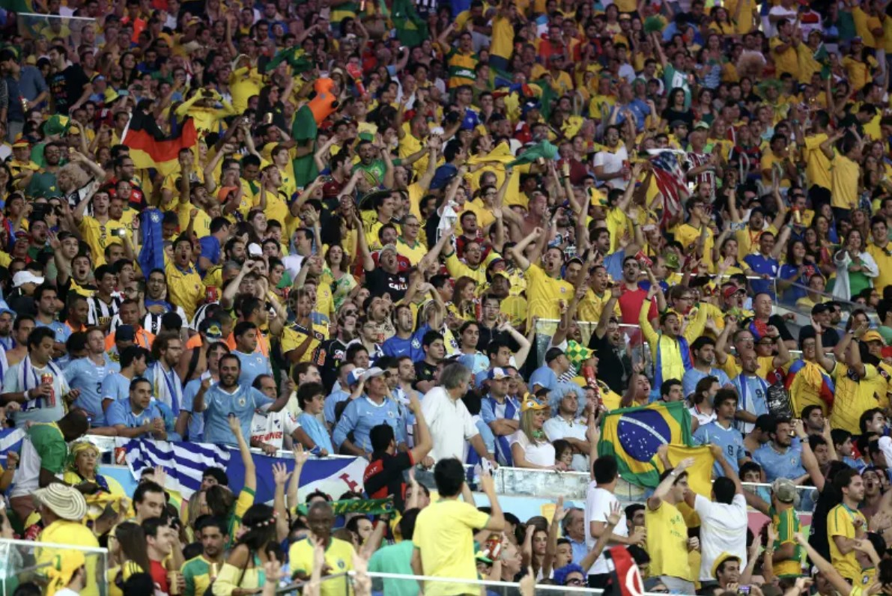

▶ Section 01
Why Soccer?
Soccer — or football, as the rest of the world calls it — is the most widely played and watched sport on the planet. With over 4 billion fans across every continent, it transcends language, culture, and borders. What makes it so captivating is its simplicity: a ball, two goals, and eleven players on each side. Anything in this simplicity can leave an entire stadium breathless.
For me, soccer is more than a sport. It's a shared language. Whether you're watching a local youth match or the FIFA World Cup Final, that feeling of anticipation as a shot flies toward goal is universal.

Fans packed into the stadium during the 2014 FIFA World Cup in Brazil.
▶ Section 02
Top Leagues & Their Iconic Clubs
The world's top soccer leagues are home to some of the most iconic clubs in sports history. Here are the top leagues ranked by global following, with notable clubs from each:
-
Premier League (England)
- Manchester City
- Liverpool FC
- Arsenal FC
- Chelsea FC
-
La Liga (Spain)
- Real Madrid
- FC Barcelona
- Atletico Madrid
-
Bundesliga (Germany)
- Bayern Munich
- Borussia Dortmund
- RB Leipzig
-
Serie A (Italy)
- Inter Milan
- AC Milan
- Juventus
-
Ligue 1 (France)
- Paris Saint-Germain
- Olympique de Marseille
- AS Monaco
▶ Section 03
Watch & Feel It

Soccer starts young — youth leagues are where the love of the game begins.
No highlight reel captures soccer's magic quite like watching a World Cup goal live. Here are some of the most iconic moments in World Cup history:
Best Goals of each World Cup — YouTube
▶ Section 04
Soccer by the Numbers
Data tells a story too. The interactive visualization below explores statistics from top European soccer leagues — goals, passes, and performance metrics that reveal how the world's best teams and players operate. Use the filters to explore.